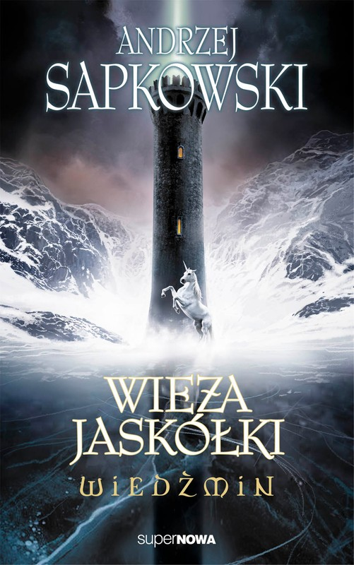

The books

The Last Wish
The Last Wish is the first book of the Witcher Saga. It introduces us to Geralt, Dandelion, Yeneffer, Ciri, and many others. It explains how all this story began.

Sword of Destiny
The second book tells us a about the Golden Dragon, the underwater civilizaton, the begining of Catriona plague, and many more. It also shows us the actual meeting of Geralt and Ciri.

Blood of the Elves
The second book of the Saga. It focuses more on Geralt, Ciri and Yeneffer. It also shows us the political situation. The Elves, tired of being discriminated, stand up, and begin a civil war in the woods. They have many helpers, but even more enemies.

Time of Contempt
The third book focuses on private life of Geralt, and explains how he got involved in the biggest conflict the current world has seen.

Baptism of Fire
After the political fight on Thandeem, Geralt is recovering in Brokilon. After a few months he sets out to look for Ciri, meeting many companions on the way.
-
The Tower of Swallows
Ciri is a captive of the Elves. She has to find a plan to run away. In the meantime Geralt stuck in Toussaint for the winter. In Toussaint he meets a certain witch, and ends up having a romance with her. In Toussaint he clears many cellars, both of wine and monsters.
- 
The Lady of the Lake
Ciri found a way to run away, but is lost in her home search. Geralt Is on his way to Striga castle, where Ciri is told to be held.

Season of Storms
Season of Storms takes place before "The last wish". It tells about the experiments of wizards, and shows Geralt from a different perspective.